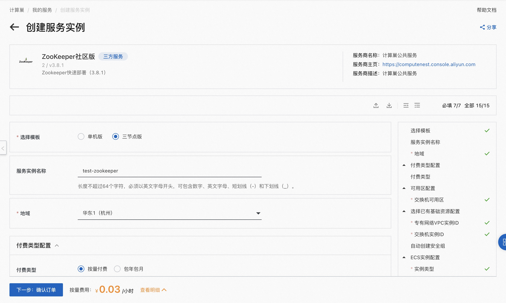
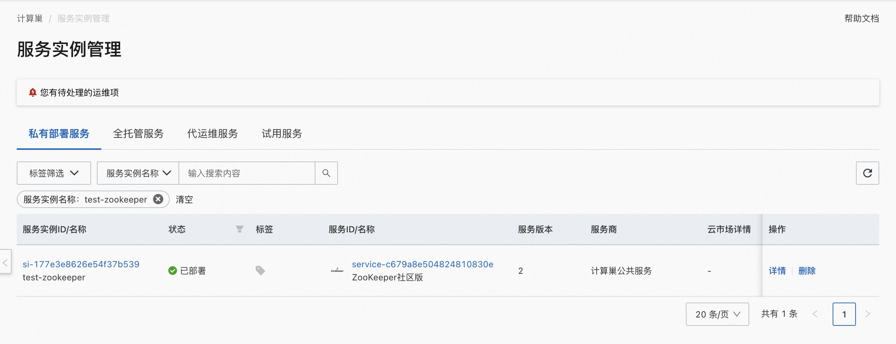
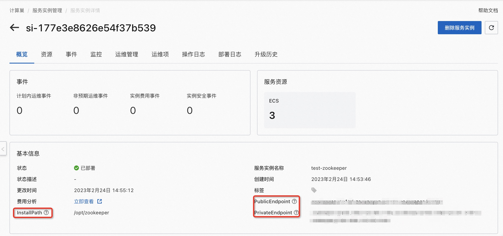

ZooKeeper社区版服务实例部署文档
概述
ZooKeeper是一个中心化的服务，用于维护配置信息、命名服务、提供分布式同步和集群服务。ZooKeeper在计算巢上提供了社区版服务，您无需自行配置云主机，即可在计算巢上快速部署ZooKeeper服务、实现运维监控，从而方便地基于ZooKeeper搭建您自己的应用。本文向您介绍如何开通计算巢上的ZooKeeper社区版服务，以及部署流程和使用说明。
计费说明
ZooKeeper社区版在计算巢上的费用主要涉及：
- 所选vCPU与内存规格
- 磁盘容量
- 公网带宽
计费方式包括：
- 按量付费（小时）
- 包年包月
预估费用在创建实例时可实时看到。
部署架构
ZooKeeper社区版有单机部署和三节点部署两种架构。
RAM账号所需权限
ZooKeeper服务需要对ECS、VPC等资源进行访问和创建操作，若您使用RAM用户创建服务实例，需要在创建服务实例前，对使用的RAM用户的账号添加相应资源的权限。添加RAM权限的详细操作，请参见为RAM用户授权。所需权限如下表所示。
| 权限策略名称 | 备注 |
|---|---|
| AliyunECSFullAccess | 管理云服务器服务（ECS）的权限 |
| AliyunVPCFullAccess | 管理专有网络（VPC）的权限 |
| AliyunROSFullAccess | 管理资源编排服务（ROS）的权限 |
| AliyunComputeNestUserFullAccess | 管理计算巢服务（ComputeNest）的用户侧权限 |
| AliyunCloudMonitorFullAccess | 管理云监控（CloudMonitor）的权限 |
部署流程
部署步骤
单击部署链接，进入服务实例部署界面，根据界面提示，填写参数完成部署。
部署参数说明
您在创建服务实例的过程中，需要配置服务实例信息。下文介绍ZooKeeper社区版服务实例输入参数的详细信息。
| 参数组 | 参数项 | 示例 | 说明 |
|---|---|---|---|
| 选择模板 | 三节点版 | 模板架构类型 | |
| 服务实例名称 | test | 实例的名称 | |
| 地域 | 华东1（杭州） | 选中服务实例的地域，建议就近选中，以获取更好的网络延时。 | |
| 可用区配置 | 部署区域 | 可用区I | 地域下的不同可用区域 |
| 付费类型配置 | 付费类型 | 按量付费 或 包年包月 | |
| 选择已有基础资源配置 | VPC ID | vpc-xxx | 选择专有网络的ID。 |
| 选择已有基础资源配置 | 交换机ID | vsw-xxx | 选择交换机ID。若找不到交换机, 可尝试切换地域和可用区 |
| ECS实例配置 | 实例类型 | ecs.g7.large | 实例规格，可以根据实际需求选择 |
| ECS实例配置 | 系统盘空间 | 40 | 系统盘空间，可以根据实际需求选择 |
| ECS实例配置 | 数据盘空间 | 40 | 数据盘空间，可以根据实际需求选择 |
| ECS实例配置 | 实例密码 | ** | 设置实例密码。长度8~30个字符，必须包含三项（大写字母、小写字母、数字、()`~!@#$%^&*-+={}[]:;'<>,.?/ 中的特殊符号） |
| ECS实例配置 | 开启公网IP | true | 是否开启公网IP |

验证结果
- 查看服务实例。 服务实例创建成功后，部署时间大约需要2分钟。部署完成后，页面上可以看到对应的服务实例。

- 通过服务实例访问ZooKeeper
 进入到对应的服务实例后，可以在页面上获取到PublicEndpoint、PrivateEndpoint和InstallPath。
使用ZooKeeper
请访问ZooKeeper官网了解如何使用ZooKeeper：ZooKeeper使用文档
© 2009-2022 Aliyun.com 版权所有